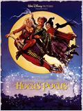

- Home
- Ação
- Animação
- Comédia
- Aventura
- Drama
- Ficção
- Romance
- Lançamentos
Abracadabra

- SINOPSE
- Em 1693, na cidade de Salem, três irmãs bruxas chamadas Winifred "Winnie", Mary e Sarah Sanderson atraem uma garotinha chamada Emily para sua casa na floresta, onde está sendo preparada um poção mágica para sugar a força vital da menina. Seu irmão, Thackery Binx, tenta salvá-la, mas é capturado pelas bruxas e obrigado a ver sua irmã morrendo durante o processo. Como as bruxas estão prestes a fazer o mesmo com Binx, ele raivosamente declara a Winnie e suas irmãs que não há crianças suficientes no mundo para fazê-las bonitas. Isso leva o trio a transformá-lo em um gato preto imortal com a capacidade de falar, punindo-o pelo insulto. Logo as bruxas são sentenciadas à morte pelos aldeões de Salém. Enforcadas devido a prática de feitiçaria, antes de morrerem, o trio lança uma maldição que as elevaria dentre os mortos quando alguém puro acendesse a vela da chama negra dentro da casa das irmãs. Incapaz de regressar à sua família, Binx começa a dedicar sua vida imortal para guardar a casa das bruxas para que a maldição não possa vir à luz.
- OPÇÕES: